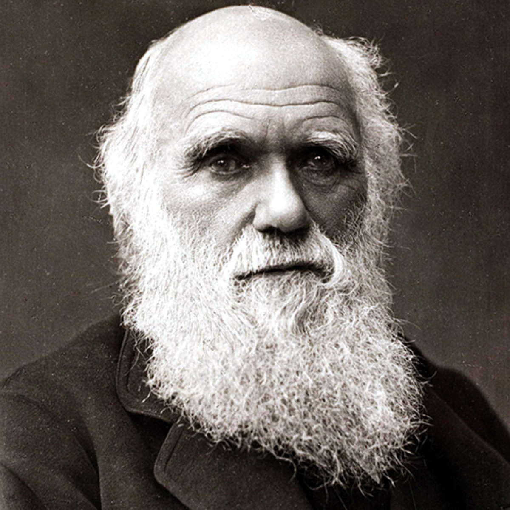

Charles Darwin

Charles Darwin
Charles Darwin, in full Charles Robert Darwin, (born February 12, 1809, Shrewsbury, Shropshire, England—died April 19, 1882, Downe, Kent), English naturalist whose scientific theory of evolution by natural selection became the foundation of modern evolutionary studies. An affable country gentleman, Darwin at first shocked religious Victorian society by suggesting that animals and humans shared a common ancestry. However, his nonreligious biology appealed to the rising class of professional scientists, and by the time of his death evolutionary imagery had spread through all of science, literature, and politics. Darwin, himself an agnostic, was accorded the ultimate British accolade of burial in Westminster Abbey, London.
Darwin formulated his bold theory in private in 1837–39, after returning from a voyage around the world aboard HMS Beagle, but it was not until two decades later that he finally gave it full public expression in On the Origin of Species (1859), a book that has deeply influenced modern Western society and thought.
Early life and education
Darwin was the second son of society doctor Robert Waring Darwin and of Susannah Wedgwood, daughter of the Unitarian pottery industrialist Josiah Wedgwood. Darwin’s other grandfather, Erasmus Darwin, a freethinking physician and poet fashionable before the French Revolution, was author of Zoonomia; or the Laws of Organic Life (1794–96). Darwin’s mother died when he was eight, and he was cared for by his three elder sisters. The boy stood in awe of his overbearing father, whose astute medical observations taught him much about human psychology. But he hated the rote learning of Classics at the traditional Anglican Shrewsbury School, where he studied between 1818 and 1825. Science was then considered dehumanizing in English public schools, and for dabbling in chemistry Darwin was condemned by his headmaster (and nicknamed “Gas” by his schoolmates).
The Beagle voyage of Charles Darwin
The circumnavigation of the globe would be the making of the 22-year-old Darwin. Five years of physical hardship and mental rigour, imprisoned within a ship’s walls, offset by wide-open opportunities in the Brazilian jungles and the Andes Mountains, were to give Darwin a new seriousness. As a gentleman naturalist, he could leave the ship for extended periods, pursuing his own interests. As a result, he spent only 18 months of the voyage aboard the ship
ABOUT
Charles Darwin
Born: 1809 Shrewsbury, England
Died: April 19, 1882 (aged 73) England